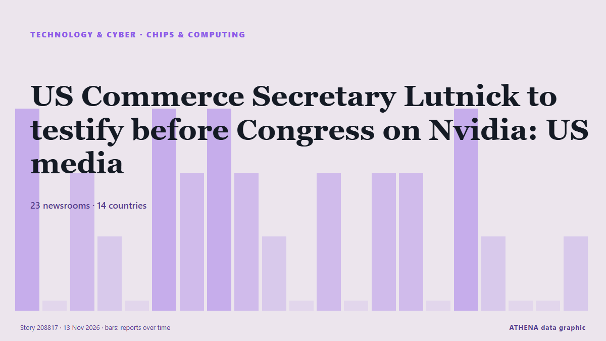

US Commerce Secretary Lutnick to testify before Congress on Nvidia: US media

US Commerce Secretary Howard Lutnick will testify before Congress on the Nvidia scandal, US media reported Thursday. de The Korea Times
Relayé de façon indépendante par 30 médias dans 15 pays depuis le 12 nov. ; premier à l'annoncer : The Straits Times ; la couverture faiblit. ATHENA juge le risque modéré (2.1/10), surtout en raison de la gravité des dommages décrits et de sa portée géographique et sectorielle. La confiance est de 87 % (élevée) : 30 médias indépendants le confirment, avec une fiabilité moyenne des sources de 74 %. Médias par pays : États-Unis (9), Royaume-Uni (6), Inde (6). Couverture : du 12 nov. au 13 nov., 24 heures.
Pourquoi c'est important: Les évolutions technologiques et cyber façonnent la sécurité, la concurrence et les règles de la vie numérique.
Ce qui a changé : 39 nouveaux articles de 30 rédactions dans les 24 heures jusqu'au 13 nov..
Premier titre : Trump team mulling Howard Lutnick’s future as commerce secretary after Nvidia scandal, report says
Les titres sont affichés en anglais, tels que publiés.
Comment lire cette page
- Ce que vous lisez
- 30 médias dans 15 pays ont rapporté cet événement. Les reportages ci-dessous sont classés selon leur ordre de parution ; chaque titre ouvre l'article original. ATHENA n'écrit aucun reportage.
- Notre lecture
- Pour mémoire — Les reportages décrivent une affaire terminée, intérieure, commerciale ou personnelle. Nous la consignons pour que vous voyiez qui l'a rapportée et quand. Nous ne suivons pas ici de risque de conflit plus large.
- Quelle base de preuves
- Solide De nombreux médias indépendants, dans de nombreux pays, décrivent le même événement.
Après retrait des doublons, des éléments hors sujet et périmés, 28 des 40 reportages listés sont retenus ; 100 % des titres correspondent à l'événement.
Environ 32 % des titres relèvent de l'analyse ou de l'opinion plutôt que du simple compte rendu.
- Ce que cela ne veut pas dire
- ATHENA mesure la façon dont un événement est rapporté, pas sa véracité. Ce n'est ni une prévision, ni un jugement sur qui a raison, ni un conseil.
- Ce qui la changerait
- Des reportages d'autres médias indépendants montrant une évolution différente, ou une confirmation ou un démenti ferme d'une source officielle.
Lecture R2 · actualisée à chaque mise à jour de cette page. ATHENA n'a pas encore publié de bilan de ces lectures ; il sera lié ici le moment venu.
En un coup d'œil
Sélectionné, noté et rédigé par la méthodologie publiée d'ATHENA. Aucun rédacteur n'intervient sur un événement en particulier. Comment il est produit ›
| 12 Nov 18:24 UTC | 3 |
|---|---|
| 12 Nov 19:24 UTC | 0 |
| 12 Nov 20:24 UTC | 2 |
| 12 Nov 21:24 UTC | 1 |
| 12 Nov 22:24 UTC | 0 |
| 12 Nov 23:24 UTC | 3 |
| 13 Nov 00:24 UTC | 2 |
| 13 Nov 01:24 UTC | 3 |
| 13 Nov 02:24 UTC | 2 |
| 13 Nov 03:24 UTC | 1 |
| 13 Nov 04:24 UTC | 0 |
| 13 Nov 05:24 UTC | 2 |
| 13 Nov 06:24 UTC | 0 |
| 13 Nov 07:24 UTC | 2 |
| 13 Nov 08:24 UTC | 2 |
| 13 Nov 09:24 UTC | 0 |
| 13 Nov 10:24 UTC | 3 |
| 13 Nov 11:24 UTC | 1 |
| 13 Nov 12:24 UTC | 0 |
| 13 Nov 13:24 UTC | 2 |
| 13 Nov 14:24 UTC | 2 |
| 13 Nov 15:24 UTC | 4 |
| 13 Nov 16:24 UTC | 3 |
| 13 Nov 17:24 UTC | 2 |
| 13 Nov 18:24 UTC | 1 |
| 12 Nov 22:10 UTC | 3.5 |
|---|---|
| 12 Nov 22:19 UTC | 0.0 |
| 12 Nov 23:30 UTC | 2.5 |
| 13 Nov 00:31 UTC | 4.4 |
| 13 Nov 01:12 UTC | 3.8 |
| 13 Nov 07:16 UTC | 1.8 |
| 13 Nov 07:58 UTC | 3.5 |
| 13 Nov 16:16 UTC | 2.4 |
| 13 Nov 16:40 UTC | 3.9 |
| 13 Nov 19:33 UTC | 2.4 |
| 13 Nov 19:33 UTC | 2.1 |
Pourquoi ces chiffres
Importance
Risque
Confiance
La couverture : qui l'a annoncé, et quand
titre tel que publié · ouvre l'original- The Straits Times · SingapourWhite House weighs Commerce Secretary Lutnick’s ouster amid Nvidia export concerns, sources say
- Fortune · États-UnisAfter Jensen Huang is Howard Lutnick the prime target of national security inquiry?
- France 24 English · FranceWhite House reportedly discussing Howard Lutnick's future as Commerce secretary
- Forbes Business · États-UnisLutnick Should Testify ‘ASAP’ About Nvidia And Huang, GOP Sen. Jim Banks Says
- The Hill · États-UnisJim Banks calls for Lutnick to testify on Nvidia CEO controversy, alleging 'loophole' use
- The Independent · Royaume-UniTrump team mulling Howard Lutnick’s future as commerce secretary after Nvidia scandal, report says
- CBS News (World) · États-UnisCritics say Lutnick failed to cut off diversion of Nvidia chips to China
- Financial Times - Global economy · Royaume-UniUS lawmakers pile pressure on Lutnick as Nvidia scandal widens
- Arab News · Arabie saouditeWhite House weighs Commerce Secretary Lutnick’s ouster amid Nvidia export concerns, sources say
- The New York Times (World) · États-UnisHoward Lutnick Took Softer Line on Nvidia as Calls for Tougher Controls Grew
- New York Times Business · États-UnisHuang and Lutnick Summoned to Testify Before Congress
- Free Malaysia Today · MalaisieUS Senate Banking Committee chair calls on Jensen Huang, Lutnick to testify
- VnExpress International · Viêt NamJensen Huang summoned to testify before US Senate committee, White House weighs Commerce Secretary Lutnick's ouster
- DigiTimes Asia · TaïwanLutnick's clash with Treasury over Nvidia chip curbs deepens as White House weighs his future
- Deccan Herald · IndeJensen Huang, Howard Lutnick summoned to testify over Nvidia-China row
- The Business Times · SingapourJensen Huang, US Commerce Secretary Lutnick summoned to testify on Capitol Hill in push for Nvidia enquiry
- Deccan Herald · IndeLutnick took a softer line on Nvidia as calls for tougher controls grew
- Indian Express · IndeWhy Nvidia’s spy scandal may cost Howard Lutnick his US Cabinet job
- Express Tribune · PakistanUS Senate Banking Committee chair calls on Jensen Huang, Lutnick to testify
- ProtoThema English ·Nvidia scandal reaches Trump administration as Congress summons Huang and Lutnick over China espionage claims
- DW English · AllemagneUS Senate asks Huang, Lutnick to testify on Nvidia
- Al Jazeera English · QatarUS Senate summons Nvidia’s Huang, Lutnick to testify
- NDTV · IndeHoward Lutnick May Lose His Position In Team Trump Amid Nvidia's China Link: Report
- France 24 English · FranceFallout from Nvidia scandal spreads as Huang resigns
- The Korea Times · Corée du SudUS Commerce Secretary Lutnick to testify before Congress on Nvidia: US media
- Gulf News · Émirats arabes unisHuang fallout far from over: Nvidia stock flat, flowers at the gate, earning looms
- Fortune · États-UnisSenate Banking Committee asks Jensen Huang and Howard Lutnick to testify over ‘significant national security concerns’ next month, or face subpoenas
- Times of India · IndeUS treasury secy flags 'lots of leakage' in US chip exports, slams Nvidia & Lutnick
- Financial Times - Global economy · Royaume-UniBessent blames Lutnick’s commerce department for failure to blacklist Megaspeed
- Forbes Business · États-UnisLutnick Will Testify Before Congress Amid Allegations He Resisted Megaspeed Crackdown
- The Business Times · SingapourJensen Huang, US Commerce Secretary Lutnick summoned to testify on Capitol Hill in push for Nvidia inquiry
- Le Monde (English) · FranceUS Treasury secretary blames the Department of Commerce for leak of Nvidia chips to China
- BBC Business · Royaume-UniNvidia scandal fallout widens as Trump's treasury secretary blames cabinet colleague
- The Independent · Royaume-UniNvidia fallout deepens as Trump official blames commerce secretary for lack of controls
- The Independent · Royaume-UniBessent blames Commerce's Lutnick for not restricting Nvidia chip exports to China
- The Next Web · Pays-BasBessent says anyone at Nvidia should be held accountable for chip leakage
- Times of India · IndeHuang's China affair may fix Howard Lutnick, the man who wanted to fix India
- Asharq Al-Awsat (English) · Arabie saouditeUS Treasury Chief Blames Commerce Dept for Failure in Nvidia Scandal
- The Korea Times · Corée du SudBessent blames Lutnick's Commerce Department for not restricting Nvidia chips to China
- Courthouse News · États-UnisBessent blames Lutnick’s Commerce Department for not restricting Nvidia chips to China